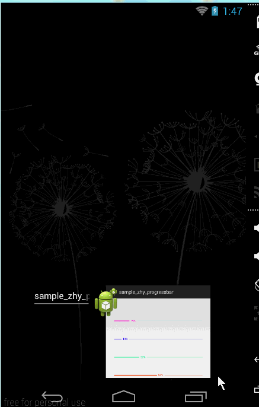
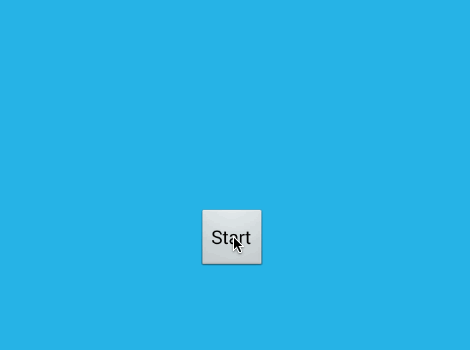
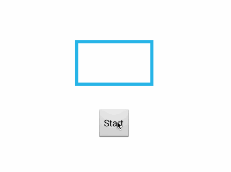
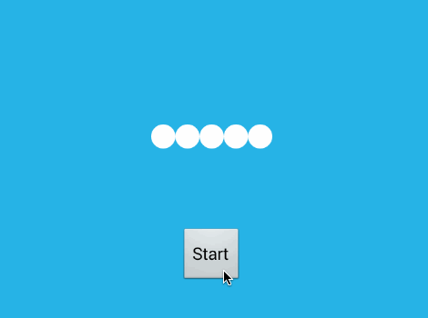

Android-ProgressBarWidthNumber： https://github.com/hongyangAndroid/Android-ProgressBarWidthNumber
description：通过继承ProgressBar实现的两种风格的滚动条，代码简洁易懂。
SmoothProgressBar： https://github.com/castorflex/SmoothProgressBar
description：Small library allowing you to make a smooth indeterminate progress bar. You can either user your progress bars and set this drawable or use directly the SmoothProgressBarView.

Loading： https://github.com/yankai-victor/Loading
description：compile 'com.victor:lib:1.0.2'
  android 实现应用起动界面上有一层透明的功能指导界面: http://blog.csdn.net/jdsjlzx/article/details/8586776